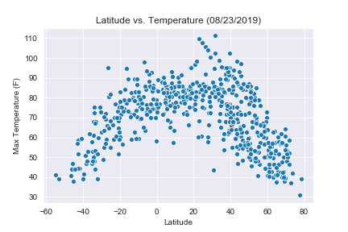

Summary: Latitude vs. X

The purpose of thise project was to analyze how weather changes as you get close to the equator. To accomplish this analysis, we first pulled data from the OpenWeather API to assemble a dataset on over 500 cities.
After assembling the dataset, we used Matplotlib to plot varioius aspects of the weather vs. latitude. Factors we looked at included: temperature, cloudiness, wind speed, and humidity. This also provides the source data and visualizations created as part of the analysis, as well as explanations and descriptions of any trends and correlations witnessed.